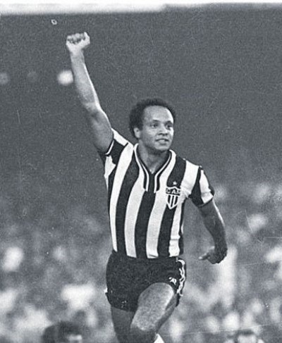
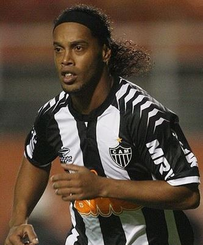
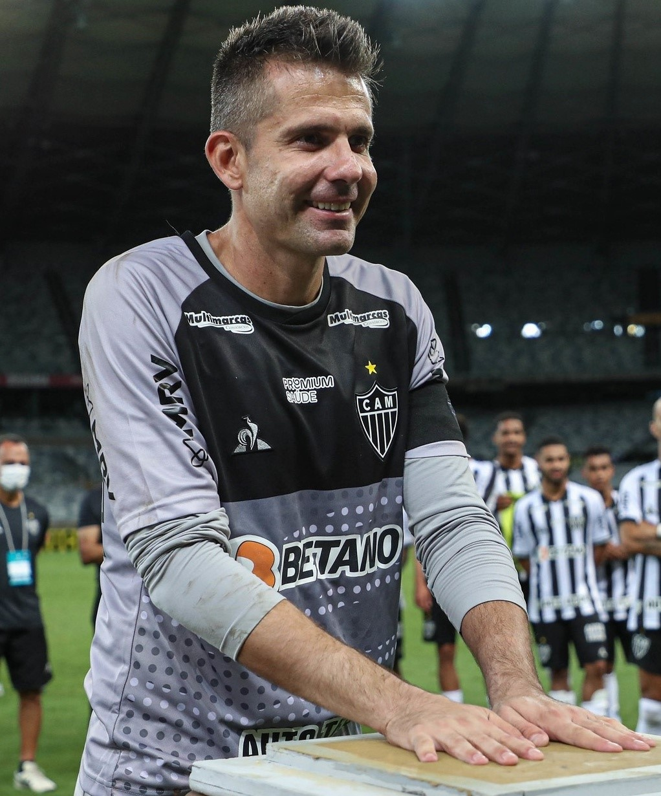
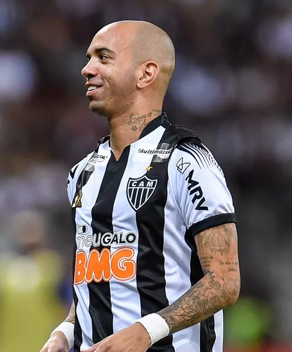

Ídolos

Reinaldo : José Reinaldo de Lima, mais conhecido como Reinaldo (Ponte Nova, 11 de janeiro de 1957), é um ex-futebolista brasileiro que atuava como atacante.
Apareceu em meados dos anos 1970 pelo Atlético Mineiro, clube a que dedicou quase toda a carreira e é considerado por muitos como um dos mais talentosos jogadores de sua época e o maior jogador da História do Clube Atletico Mineiro.
Reinaldo surgiu aos 15 anos, ao participar de um treino no Atlético, jogando no ataque reserva contra a defesa titular que conquistou o Brasileirão poucos meses antes, em 1971. Reinaldo foi um dos melhores em campo naquele dia, chamando a atenção de todos. Em 28 de janeiro de 1973, aos 16 anos, estreou pelo time profissional do Atlético, em partida contra o Valério. O resultado final dessa partida foi Atlético 1–2 Valério. No ano seguinte, em partida contra o Ceará, ao pisar em um buraco, torceu o joelho. Ainda nessa época, teve de extrair ambos os meniscos depois de uma entrada de um zagueiro de seu próprio time em um treinamento.[3] As lesões no joelho acompanharam-no por toda a carreira. Conquistou seu primeiro título ao ganhar de forma invicta o Campeonato Mineiro de 1976 e, dois anos depois, daria início ao hexacampeonato que o Atlético conquistou, entre 1978 a 1983. Tornou-se o artilheiro com melhor média de gols em um único Campeonato Brasileiro (28 gols em 18 partidas, ou 1,55 por jogo, em 1977), apesar de nunca ter conquistado o título nacional.
Nesse mesmo ano, seu time terminou o campeonato sem perder um jogo, mas apenas com o vice-campeonato, perdendo a final nos pênaltis para o São Paulo, que terminou a competição com 12 pontos a menos em um tempo que as vitórias valiam apenas 2 pontos. Também foi vice-campeão brasileiro em 1980. Ao longo de sua carreira pelo Atlético, Reinaldo participou de 475 jogos, marcou 255 gols, obteve 289 vitórias, 113 empates e 73 derrotas. Recebeu no total 17 cartões vermelhos. Já pelas categorias de base, são 54 gols em 44 jogos, totalizando 309 gols, o que faz dele o maior artilheiro da história do futebol de Minas Gerais[carece de fontes], o maior artilheiro do Atlético, e possuidor da maior média de gols do campeonato brasileiro, 1,55 por partida. Foi também o maior artilheiro do campeonato brasileiro no período de 1977 à 1997, com 28 gols marcados em 18 jogos. Foi superado em 1997 por Edmundo, que atuando pelo Vasco marcou 29 gols em 28 jogos. Guilherme, com 28 gols em 29 jogos, atuando também pelo Atlético, em 1999, conseguiu igualar sua marca. Dimba, que atuava pelo Goiás com 31 gols marcados em 46 jogos, no ano de 2003, e Washington em 2004, que atuando pelo Atlético Paranaense marcou 34 gols em 46 jogos. Vale lembrar que mesmo assim, nenhum desses conseguiu atingir ou superar sua média.

Ronaldo de Assis Moreira, mais conhecido como Ronaldinho Gaúcho ou simplesmente Ronaldinho (Porto Alegre, 21 de março de 1980), é um ex-futebolista brasileiro que atuava como meia-atacante. Atualmente é embaixador do Barcelona, clube em que fez história.Uma de suas marcas registradas é o aspecto dentuço, seus dribles fantásticos e usar uma faixa na cabeça após adotar os cabelos longos. Era Extremamente habilidoso e muito preciso em seus chutes e passes, é considerado por muitos especialistas como o futebolista mais talentoso de sua geração. Popularizou a cobrança de falta por debaixo da barreira. Venceu o prêmio Melhor Jogador do Mundo pela FIFA em 2004 e 2005, época em que viveu o grande auge de sua carreira. Foi o primeiro (e ainda é o único) futebolista na história a ter conquistado Liga dos Campeões da UEFA, a Libertadores, a Copa do Mundo e a também ter sido eleito o Melhor do Mundo. Empatado com Cuauhtémoc Blanco, é o maior goleador da Copa das Confederações, com 9 gols. Ganhou, em 2013, o prêmio de Rei da América, em eleição anual do diário El País, do Uruguai, desbancando Neymar e Maxi Rodríguez. Na infância, a sua principal diversão era brincar com a bola de futebol, junto dos seus melhores amigos. Com sete anos começou a jogar na escola de futebol infantil do Grêmio. Aos oito anos seu pai morreu, e ele recebeu apoio de sua mãe, irmã e de seu irmão mais velho como figura paterna.
Desde pequeno, Ronaldinho já demonstrava habilidade com a bola, como se pode ver em vídeos caseiros da sua
família. Entre seus ídolos, além do seu irmão Assis, encontram-se Rivaldo e Ronaldo (com os quais ganhou a Copa do Mundo de 2002), Valdo, Romário, Zico, Rivellino, Maradona e Pelé. A carreira profissional de Ronaldinho iniciou-se no time do Grêmio, tendo como seu primeiro treinador Sebastião Lazaroni. Em 1997 ganhou o título Sub-17 jogando pelo time. Sua primeira aparição como profissional ocorreu em 1998, na Copa Libertadores da América, onde logo sua habilidade e seu grande domínio de bola começaram a ser notados pelos clubes.
Além da consagração no jogo contra a Seleção Venezuelana pela Copa América, Ronaldinho também brilhou nas finais do Campeonato Gaúcho de 1999, quando fez o gol do título para o Grêmio contra o Internacional, além de, audaciosamente, ter realizado dribles fantásticos sobre o capitão do tetracampeonato de 1994, Dunga. Sua atuação nessa final foi um importante fator para sua convocação à Seleção Brasileira pelo então técnico Vanderlei Luxemburgo. Um fato curioso sobre a convocação é que Ronaldinho só foi convocado depois que o técnico da Seleção cortou Edílson Capetinha da equipe por ter provocado e se envolvido em uma briga pelo Corinthians, na final do Campeonato Paulista contra o Palmeiras.
Disputou 141 partidas e marcou 68 gols pelo Grêmio, contando partidas oficiais e amistosos.

Victor Leandro Bagy, ou simplesmente Victor (Santo Anastácio, 21 de janeiro de 1983), é um ex-futebolista brasileiro que atuava como goleiro. Atualmente, é gerente de futebol do Atlético Mineiro.
Foi premiado em 2008 e 2009 como melhor goleiro do campeonato brasileiro, além de ser o melhor goleiro da libertadores de 2013 e da copa do Brasil em 2014 e 2016. Revelado pelo Paulista em 2001, Victor foi emprestado ao Ituano no ano seguinte, onde participou da conquista do Campeonato Paulista de 2002. De volta ao Paulista, foi membro do elenco campeão da Copa do Brasil de 2005. Em 2008, foi contratado pelo Grêmio, onde fez sua estreia na Série A e foi eleito como o melhor goleiro do Campeonato Brasileiro de forma consecutiva em seus dois primeiros anos. Em 2012, se transferiu ao Atlético Mineiro. Com suas atuações na conquista da Copa Libertadores de 2013, Victor ganhou apelido de São Victor do Horto (em referência ao bairro em que fica localizado o Estádio Independência, onde o Atlético mandava seus jogos), graças a defesa com a perna esquerda na disputa de pênaltis contra o Tijuana, nas quartas de final da competição. No ano seguinte, conquistou os títulos da Recopa Sul-Americana e da Copa do Brasil. Em 2021, anunciou a sua aposentadoria como jogador, tendo conquistado sete títulos oficiais e atuado em 424 partidas pelo Atlético, uma marca que o posiciona em nono lugar no ranking histórico de jogadores com mais atuações pelo clube.
Pela Seleção Brasileira, Victor recebeu a sua primeira convocação em 2009 e estreou no ano seguinte, em um amistoso vencido por 2 a 0 contra os Estados Unidos. Ele fez parte do grupo campeão da Copa das Confederações de 2009, além de também ser chamado para as disputas da Copa América de 2011 e da Copa do Mundo de 2014. Ao todo, atuou em seis oportunidades pelo Brasil, sofrendo um único gol.Em 30 de Maio de 2013, fez uma importante defesa, quando defendeu um pênalti cobrado por Riascos, aos 47 minutos do segundo tempo, contra a equipe do Tijuana. Tal defesa impediu o gol que eliminaria o Atlético da Copa Libertadores, classificando-o para a fase das semifinais e tornando-o o herói daquela partida. No jogo de volta da semifinal contra o Newell's Old Boys, diante da torcida no Estádio Independência, Victor defendeu a última cobrança da equipe adversária na disputa de pênaltis, selando a classificação do clube para a final da Copa Libertadores da América. A partir de então, o goleiro se consagrou e foi nomeado São Victor do Horto. Na final, contra o Olímpia, foi o melhor jogador da partida defendendo mais um pênalti e consagrando o Galo campeão da Copa Libertadores da América em 2013.

Diego Tardelli Martins, mais conhecido apenas como Diego Tardelli (Santa Bárbara d'Oeste, 10 de maio de 1985), é um futebolista brasileiro que atua como atacante. Atualmente está sem clube.Atacante de origem, Diego Tardelli destaca-se por sua movimentação dentro de campo, tornando-o um jogar versátil em campo, podendo jogar na referência no ataque como centroavante ou também como um segundo atacante, jogando pelas pontas. Suas principais características são velocidade e finalização de curta e longa distância.Diego Tardelli iniciou sua carreira no Partner Football, clube empresa de Curitiba. Chegou a ser emprestado para as categorias de base do Santos, na mesma geração de Robinho e Diego. Porém, devido a problemas disciplinares, o jogador acabou sendo devolvido ao clube de Curitiba.Após isso, em negociação conturbada, apareceu atuando no União Barbarense, e em 2003, aos 18 anos foi levado pelo São Paulo através de mais uma polêmica transação com o clube interiorano da qual ficou avaliada em apenas 21 mil reais, um valor extremamente baixo para os padrões do futebol.
Ainda nas categorias de base do Tricolor Paulista, Tardelli era conhecido como Dinei, atacante e ídolo do rival Corinthians, pois, a exemplo do corintiano, pintava seus cabelos de loiro.Diego Tardelli surgiu durante a Copa São Paulo de Juniores de 2004, como uma das principais promessas do futebol brasileiro, quando chegou até a final do campeonato, vencida pelo Corinthians.
Já no ano seguinte, tornou-se titular do time principal do São Paulo, tendo sido destaque na conquista do Campeonato Paulista de 2005, artilheiro da equipe com 12 gols. Em seguida, na final da Taça Libertadores de 2005, fez um dos gols, na vitória de 4 a 0 sobre o Atlético-PR, que deu ao São Paulo seu terceiro título nesta competição. Anos depois, mais precisamente em 2014, Tardelli disse que ficou certa mágoa com o Tricolor Paulista. Segundo o atacante, "eu era visto como um talento que não despontava, jogador-problema. Talvez eu tenha me empolgado no momento errado. Tinha 17, 18 anos, ia pra balada e chegava atrasado aos treinos. O São Paulo poderia ter me dado cobertura e instrução, mas nunca me defendeu. Aí a imprensa deitava e rolava. A manchete do dia seguinte era sempre garantida. Na situação difícil, ninguém ficava do meu lado."Contudo, a carreira de Tardelli no São Paulo, logo acabaria esbarrando em seu temperamento difícil. Envolvido em seguidos problemas disciplinares, no dia 9 de dezembro de 2005, acabou sendo emprestado ao Real Betis, da Espanha, mas não obteve sucesso.Terminado seu empréstimo junto ao PSV, em 20 de junho de 2007, Tardelli retornou ao São Paulo, onde atuou em 25 partidas, conquistando o Campeonato Brasileiro de 2007.